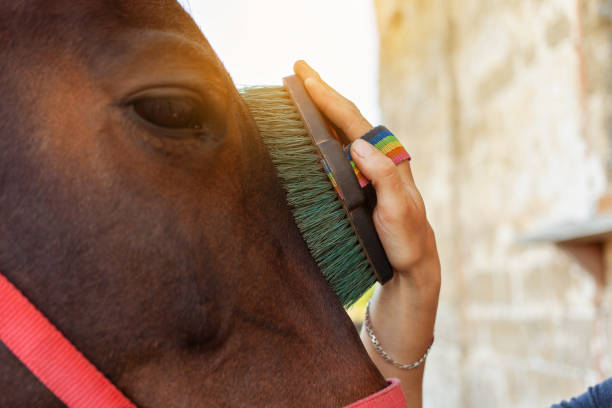
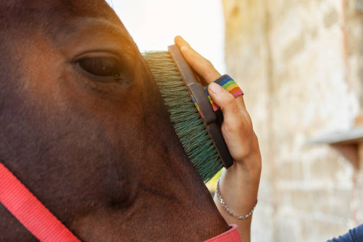

Horses are noble animals
DID YOU KNOW??

čovek i konj
The companionship of horses and humans dates back to around 2000 BC. In the past, horses were status symbols and every wealthy house had them. Because of their appearance, long mane and rich tail, horses have always caused admiration, and passionate horse lovers, always emphasized their intelligence and loyalty.
You in the saddle of a tame horse, around you the vast greenery of forests and flowers dotted with flowers pastures, fresh mountain breeze and warm rays of the sun on the face. You feel immeasurable freedom and everything takes on a new dimension that you won't want to leave to come back. This is what a day of horse riding looks like in the nature of our Adijat riding school.

the effect of horses on human health
Although you may think that the rider does not do much comfortably sitting on broad shoulders horse, the truth is a little different. You will understand that yourself very quickly. Riding activates the most neglected muscle groups and you will feel it the next day muscles you didn't know you had Horse riding is great fitness for both the body and the mind. You will improve your form, strengthen your muscles and burn calories. An hour of riding has the same effect as 30 minutes of running or cycling.


 
